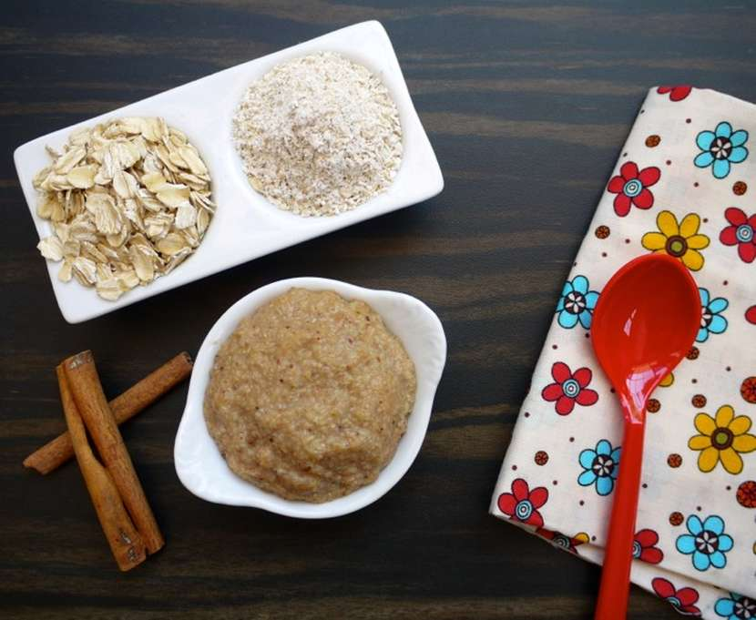
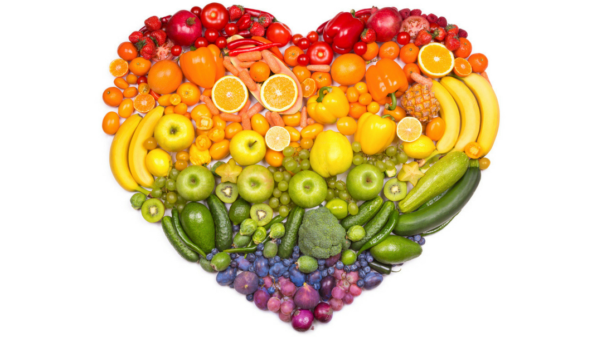
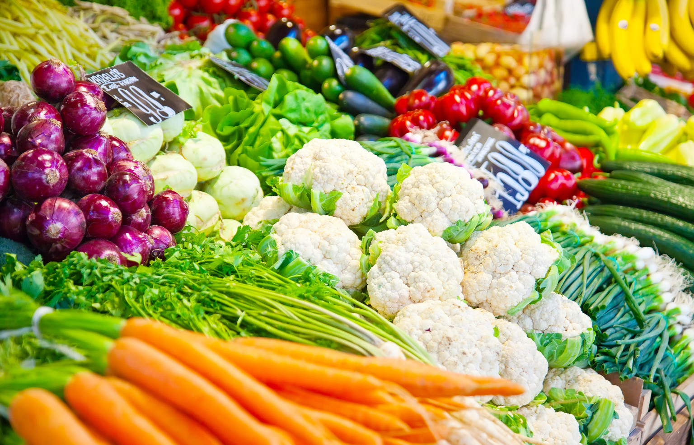
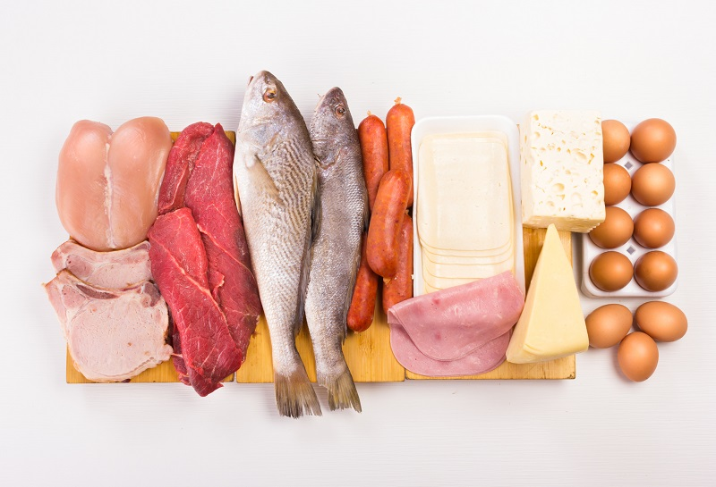

អាហារ៥ប្រភេទ មានគុណប្រយោជន៍សម្រាប់សុខភាពទារក ទើបមានអាយុ៥ខែ
- ការលូតលាស់
- ខែធ្នូ 13, 2019
ការចិញ្ចឹមមើលថែទាំកូនតូចៗ គឺជារឿងសំខាន់ និងចាំបាច់ ដែលក្នុងនាមជាឪពុកម្តាយ ឬអាណាព្យាបាល តែងតែយកចិត្តទុកដាក់ ពិសេសទៅលើបញ្ហាសុខភាព និងការលូតលាស់ ទាំងផ្នែករាងកាយ ទាំងខួរក្បាល ជាដើម។ ការលូតលាស់ចម្រើនវ័យរបស់ក្មេង មិនអាស្រ័យតែចំពោះការផ្តល់ចំណីអាហារ ដែលមានគុណភាពប៉ុណ្ណោះទេ ការបង្ហាត់បង្រៀន ការអប់រំផ្សេងៗទៀត ក៏ជាកត្តាដែលសំខាន់ និងចាំបាច់បំផុតសម្រាប់កូនៗជាទីស្រលាញ់របស់លោកអ្នកផងដែរ។
ថ្ងៃនេះ គេហទំព័រ កូនក្មេង សូមលើកយកអាហារ៥ប្រភេទ ដែលមានគុណប្រយោជន៍ចំពោះសុខភាពទារក ដែលទើបមានអាយុ៥ខែ ហើយលោកអ្នកក៏គួរត្រូវបានពិគ្រោះជាមួយគ្រូពេទ្យជំនាញផងដែរ ក្នុងការផ្តល់របបអាហារប្រចាំថ្ងៃសម្រាប់កូនតូចរបស់លោកអ្នក។ អ្នកជំនាញបានលើកឡើងថា ការផ្តល់ឱ្យទារកនូវបរិមាណអាហារត្រឹមត្រូវ លុះត្រាតែកូនរបស់លោកអ្នកមានស្ថានភាពសុខភាព ដែលត្រូវការរបបអាហារជាក់លាក់ នោះការផ្តល់របបអាហាររឹង គឺសមរម្យនៅពេលកូនតូចរបស់លោកអ្នកមានអាយុ៥ខែ។ ម្យ៉ាងទៀត លោកអ្នកអាចត្រូវការពេលវេលាមួយរយៈ ក្នុងការទម្លាប់ ឬធ្វើឱ្យកូនតូច សម្របខ្លួនទៅនឹងប្រភេទអាហារថ្មីនេះ។
អ្នកជំនាញបានលើកឡើងថា ការផ្តល់ឱ្យទារកនូវបរិមាណអាហារត្រឹមត្រូវ លុះត្រាតែកូនរបស់លោកអ្នកមានស្ថានភាពសុខភាព ដែលត្រូវការរបបអាហារជាក់លាក់ នោះការផ្តល់របបអាហាររឹង គឺសមរម្យនៅពេលកូនតូចរបស់លោកអ្នកមានអាយុ៥ខែ។ ម្យ៉ាងទៀត លោកអ្នកអាចត្រូវការពេលវេលាមួយរយៈ ក្នុងការទម្លាប់ ឬធ្វើឱ្យកូនតូច សម្របខ្លួនទៅនឹងប្រភេទអាហារថ្មីនេះ។
មួយវិញទៀត ការជ្រើសរើសគ្រឿងបរិក្ខារសម្រាប់ប្រើក្នុងការបញ្ចុកចំណីអាហារដល់ទារក ក៏ជារឿងសំខាន់ដែលត្រូវពិនិត្យ និងយកចិត្តទុកដាក់ ដោយត្រូវប្រើស្លាបព្រា និងកែវទឹកទន់ៗ ហើយពេលបញ្ចុកកូនមិនត្រូវបង្ខំក្មេងនោះទេ ព្រោះការទំពារ និងការលេបអាហារចូលទៅក្នុងបំពង់ក គឺមានការលំបាកបន្តិចសម្រាប់ក្មេងតូចៗ។ ខាងក្រោមនេះ គឺជារបបអាហារទាំង៥ប្រភេទ ដែលមានគុណប្រយោជន៍ចំពោះទារកអាយុ៥ខែ៖១-គ្រាប់ធញ្ញជាតិ(Cereals)
នៅពេលកូនរបស់លោកអ្នកឈានដល់អាយុ៥ខែ លោកអ្នកគួរចាប់ផ្តើមផ្តល់ឱ្យគាត់នូវរបបអាហារជាគ្រាប់ធញ្ញជាតិ ដោយធ្វើយ៉ាងណាឱ្យវាមានសភាពទន់ ដែលងាយឱ្យទារកអាចញ៉ាំបាន។ នៅក្នុងតំណាក់កាលដំបូងនេះ លោកអ្នកគួរជៀសវាងការផ្តល់ឱ្យទារក នូវគ្រាប់ធញ្ញជាតិរសជាតិ(Flavored Cereals)។
២.ផ្លែឈើ(Fruits)
ផ្លែឈើ គឺសម្បូរទៅដោយវីតាមីនច្រើនប្រភេទ ដែលជាជម្រើសរបបអាហារមួយល្អសម្រាប់ទារកអាយុ៥ខែ។ ចំពោះរបបអាហារមួយប្រភេទនេះ លោកអ្នកគួរតែកិនវាឱ្យម៉ត់ ឬជ្រើសយកផ្លែឈើណាដែលមានសាច់ទន់ ដូចជាផ្លែចេក ឬផ្លែប័រ ជាដើម ដែលទារកអាចញ៉ាំបាន។
៣.បន្លែ (Vegetables)
ប្រភេទបន្លែដូចជា ដំឡូង ការ៉ុត និងល្ហុង ជាដើម ក៏ជារបបអាហារមួយដ៏មានសារៈសំខាន់សម្រាប់សុខភាពទារកផងដែរ។ ទោះយ៉ាងណា លោកអ្នកត្រូវប្រាកដថា បន្លែដែលជាចំណែកក្នុងរបបអាហារប្រចាំថ្ងៃរបស់ទារក ជាបន្លែដែលឆ្អិន ព្រោះក្មេងដែលមិនទាន់មានអាយុ១ឆ្នាំ ឬច្រើនជាងនេះ មិនត្រូវឱ្យពួកគាត់ញ៉ាំបន្លែឆៅនោះទេ។ ម្យ៉ាងទៀត ត្រូវជៀសវាងការផ្តល់បន្លែមានជាតិសរសៃ។
៤.ប្រូតេអ៊ីនគ្មានខ្លាញ់ (Lean Protein)
ការលូតលាស់របស់ទារក ពឹងផ្អែកមួយផ្នែកទៅលើរបបអាហារ ដែលមានផ្ទុកនូវប្រូតេអ៊ីគ្មានខ្លាញ់ (Lean Protein)។ ប្រូតេអ៊ីនគ្មានខ្លាញ់ មាននៅលើប្រភេទអាហារដូចជា សាច់មាន់ សាច់គោ សាច់ត្រី និងស៊ុត ជាដើម។ លោកអ្នកក៏ត្រូវមានការប្រុងប្រយ័ត្ន នៅក្នុងការជ្រើសរើសប្រភេទអាហារទាំងនេះ។ មួយវិញទៀត នៅពេលកូនលោកអ្នកមានអាយុ៨ខែហើយ គួរតែផ្តល់ឱ្យទារកនូវរបបអាហារជាទឹកដោះ មួយមុខបន្ថែមទៀត។
៥.ស៊ុត(Eggs)
ស៊ុត គឺជារបបអាហារយ៉ាងពិសេសមួយប្រភេទ សម្រាប់ទារកដែលកំពុងស្ថិតនៅក្នុងតំណាក់កាល នៃការលូតលាស់។ ទោះយ៉ាងណា តើលោកអ្នកត្រូវតែជ្រើសរើសស៊ុតជារបបអាហារសម្រាប់ទារកអាយុ៥ខែដែរឬយ៉ាងណា? បើទោះថា ស៊ុត មានគុណប្រយោជន៍ចំពោះសុខភាពទារកក្តី តែប៉ុន្មានឆ្នាំចុងក្រោយនេះ មិនត្រូវបានគេណែនាំថា ជារបបអាហារសមស្របសម្រាប់ទារកកំពុងលូតលាស់ទៀតនោះឡើយ៕
រក្សាសិទ្ធិដោយ៖